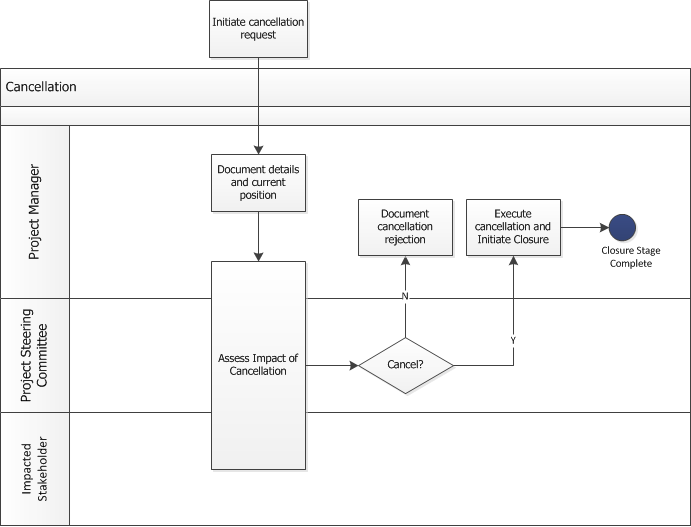

Purpose
To ensure we have the correct process, and questions considered when a project is cancelled. This will ensure that
-
At any point a project could be cancelled
-
The correct impacts are considered lead to the decision to cancel
-
The correct steps are taken before cancellation is complete
Roles and Responsibilities
-
The project sponsor is accountable for cancellation decisions (with the support of the Project Steering Committee)
-
The project manager is responsible for executing the cancellation process
-
All Stakeholders are responsible for identifying the impacts of cancellation
Process

Procedure
At any point during definition or execution a project may be cancelled. The final decision should be made by the PSC /
Project Sponsor, however the process may be initiated anywhere in definition or execution.
Step 1: Initiate Cancellation
Identify a cause significant enough to suggest cancellation. This could be (but is not restricted to):
-
Programme Cancelled or significantly changed
-
Benefits no longer worth investment (at project level)
-
Issue or risk too significant to continue
-
Date of delivery means benefits no longer realisable
Step 2: Document Cancellation
Ensure all the cancellation details are recorded including
-
Reason for cancelling
-
Likely cost of cancelling versus continuing project
-
Alternative options / scenarios considered
Step 3: Assess Cancellation Impact
Work with impacted Stakeholders and PSC to assess the impacts
-
Is it less expensive to cancel or continue to completion?
-
What are the Impacts to business / programme / portfolio of not delivering either the entire or parts of the
project
-
Is it feasible to reconfigure the project (scope or objectives) to retain some value?
Step 4: Decide whether to cancel
Step 5: Document Decision
Ensure that cancellation decision is documented and the reasons identified before moving to closure.
Key Considerations
-
Ensure that cancellation requests are well thought out before being submitted.
-
A project cancelled early in the lifecycle may have negligible impact.
-
A cancellation late in the lifecycle, may involve major impacts
-
Ensure that decisions and reasons are clearly and well articulated
-
Ensure that alternative options/scenarios are considered including de-scoping, deferring, re-launching